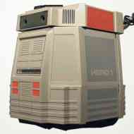
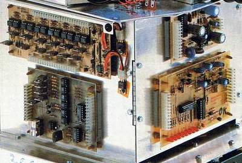
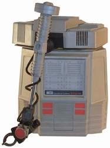
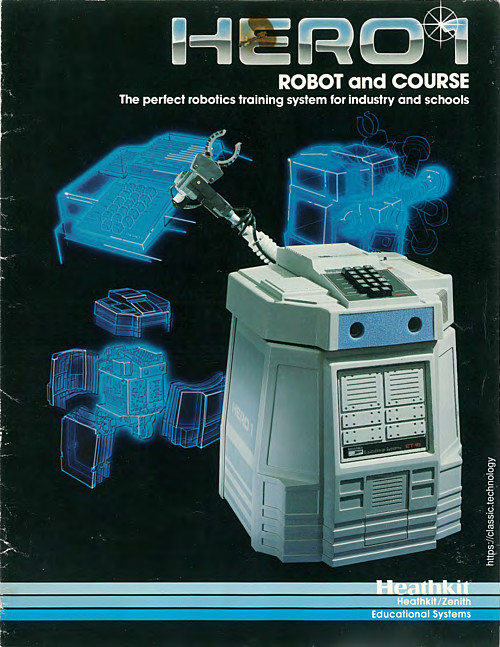

Heathkit HERO 1
Educational robot with sonar, light, and sound sensors.

Overview
The Heathkit HERO 1 (ET-18) was a self-contained mobile robot introduced in 1982 by the Heath Company of Benton Harbor, Michigan, primarily known for its electronic kits. The robot was designed as an educational platform, enabling students, hobbyists, and engineers to learn about robotics and computer control of physical devices. It was one of the first robots to bring programmable sensing, locomotion, and speech to an affordable, kit‑built format, making physical‑world interaction a tangible subject for human‑computer interaction experimentation.
Equipped with a Motorola 6808 microprocessor, 4K of RAM, and 8K of ROM, the HERO 1 could process inputs from an array of sensors: a light-dependent resistor, a condenser microphone, a passive infrared motion detector, and a Polaroid ultrasonic ranging module. An integrated Votrax SC-01 speech synthesizer gave it a spoken voice, while a 16‑character alphanumeric LED display and a 17‑key hex keypad on its rotating head provided direct user interaction. The robot also featured an optional five‑axis arm with gripper, allowing it to manipulate objects. All these capabilities were embedded in a battery‑powered, wheeled chassis roughly 50 cm tall.
Programming the HERO 1 could be done directly via its hex keypad, which entered machine code or accessed a resident debug monitor. More elaborate control was achieved through an RS‑232 serial link to a personal computer, using the on‑board ROM‑based HERO BASIC language. This dual‑mode interface opened the door for HCI researchers to rapidly prototype interactive behaviors such as obstacle‑avoiding navigation, voice‑responsive tasks, and even simple telepresence. As a result, the HERO 1 became an early platform for exploring embodied interaction design, situating computing in the physical world long before off‑the‑shelf robotic kits were commonplace.
Deep dive
Heathkit, the kit‑building division of the Heath Company, had a long history of electronic training products. In October 1979, a team led by David Mork began developing a robot that would teach microprocessor control and sensor integration. The result was the HERO 1 (Heathkit Educational Robot, model ET‑18), launched in 1982. Priced at $1,495 as a kit and $2,495 factory‑assembled, it was marketed through Heathkit’s catalog and educational channels, aimed at vocational schools, colleges, and advanced hobbyists.
The HERO 1’s brain was a 1‑MHz Motorola 6808 CPU, backed by 4K of static RAM (expandable to 8K) and 8K of ROM containing the operating system and HERO BASIC. Sensors included a CdS photocell for ambient light, an electret microphone with amplifier for sound detection, a heat/motion sensor using a passive infrared element, and a Polaroid electrostatic sonar unit that measured distances from 0.15 to 6 meters. A magnetic reed switch in the base detected the robot’s wheel rotation, while potentiometers tracked the head’s pan and tilt. Outputs comprised the Votrax SC‑01 phoneme synthesizer driving a speaker, a 16‑character alphanumeric LED display, two drive motors and a steering servo, and the optional robot arm with its own motor controllers. Power came from two sealed 12‑volt lead‑acid batteries, giving several hours of operation. The body was a molded plastic shell on a circular baseplate, with a top‑mounted head unit that rotated 350° and tilted ±45°. The entire robot weighed about 16 kg and stood 50 cm high.
Interaction with the HERO 1 could occur at two levels. For quick experimentation, the 17‑button hex keypad on the head allowed the user to enter 6808 opcodes directly, read sensor values on the LED display, and command motor actions. A resident monitor program handled the keypad interface and provided a simple debug environment. For more complex programming, the robot’s RS‑232 serial port (300–4800 baud) connected to a terminal or personal computer. The onboard ROM contained an interpretive BASIC language with statements that directly addressed sensors and actuators—e.g., MOVE 100 to advance 100 encoder counts, SONAR to read distance, or SPEAK "HELLO" to string phonemes. Users could download programs typed on a PC and run them autonomously or under remote control. This made the HERO 1 a flexible testbed for human‑computer interaction research; one could write a script that made the robot wander until it heard a clap, then approach and deliver a spoken message, combining sensing, mobility, and speech. Its use in university HCI labs and hobbyist workshops demonstrated that intelligent behavior could be packaged in a consumer‑accessible form, inspiring later research into ubiquitous and embodied computing.
The HERO 1 was produced from 1982 until about 1985, when Heathkit shifted focus to its lower‑cost HERO Jr. and the more powerful HERO 2000 (based on an Intel 8088). Heathkit continued to supply manuals, spare parts, and software for the HERO line until 1995. Exact sales figures are unpublished, but the kit was expensive compared to contemporary home computers, limiting its market primarily to schools and dedicated enthusiasts. Today, surviving units are collector’s items and appear in robotics museums, prized for their historical role in bringing real‑world interaction to the personal computing era.
Though not a commercial blockbuster, the HERO 1 had a lasting influence on personal robotics and HCI. It was among the first platforms to give programmers direct access to a rich set of physical sensors and actuators, lowering the barrier to investigating embodied interaction. In academic settings, the robot helped frame early discussions on ambient intelligence and tangible user interfaces, as researchers used it to build prototypes that responded to people’s presence, voice, and gestures. Its open architecture and available documentation also nurtured a community of hobbyist modifiers who added wireless links, extended memory, or custom sensors. This do‑it‑yourself ethos foreshadowed the Maker movement and the current landscape of programmable robotic toys (such as LEGO Mindstorms), which owe a conceptual debt to the HERO 1’s accessible combination of sensing, mobility, and speech.
Team & pioneers
- Heath Company / Heathkit. Developer and distributor of the HERO 1 educational robot, Benton Harbor, Michigan.
- David A. Mork. Lead designer of the HERO 1 at Heathkit Educational Systems (source: theoldrobots.com hero1-a page).
Media


